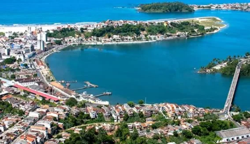
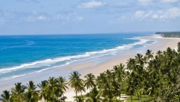
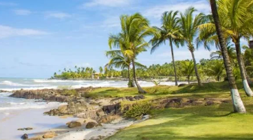
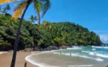
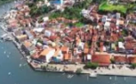
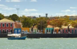

| Início | Sobre nós | Passeios Turísticos | Transfer | Fale Conosco | Depoimentos |
A razão de nossa existência é ver a sua satisfação. Somos um receptivo turístico que se destaca no mercado local pela lealdade e respeito aos parceiros e clientes, aliado a qualidade nos serviços, oferecendo a cada cliente uma experiência única.

IlhéusPasseios City Tour pelos principais pontos turísticos da cidade... Saiba mais |

Serra GrandePasseio da praia do Pé de Serra e Cachoeira do Tijuípe... Saiba mais |

Fazenda Capela VelhaPasseio da Fazenda de Cacau com a Fábrica de Chocolate Tour... Saiba mais |

OlivençaPasseio pelas praias do Sul de Ilhéus, bairro indígena de Olivença... Saiba mais |

ItacaréVia BA-001, 1h16min |
73km |
CanabravaVia Estrada Una/Ilhéus, 32min |
18,4km |
TororombaVia Estrada Una/Ilhéus, 24min |
24km |
CamamuVia BA-001, 1h43min |
112km |

Morro de São PauloVia BA-001, 3h52min + 30min de lancha |
204km |
ComandatubaVia Estrada Una/Ilhéus, 1h21min |
77,7km |

Porto SeguroVia BR-101, 4h51min |
310km |
SalvadorVia BR-101, 6h37min |
454km |
Telefone+55 (73) 99953-3115 |
Envie uma mensagem |
Mensagemcomercial@cacauturismo.com.br |
@cacauturismo |
| Início Sobre nós Passeios turísticos Transfer Fale conosco Depoimentos |
© 2023 Cacau Turismo by Oxe Digital |